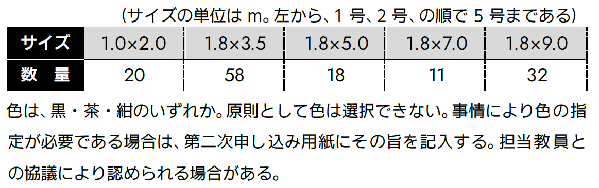
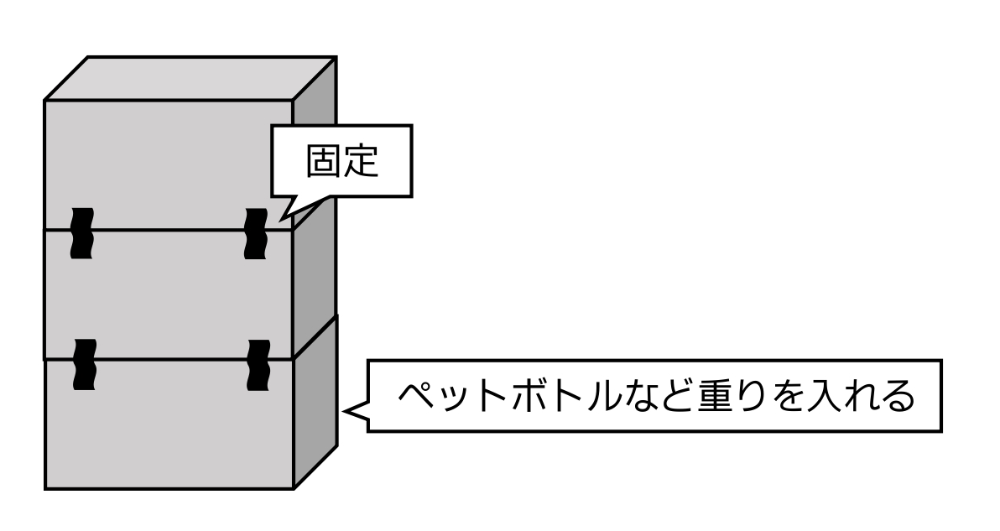
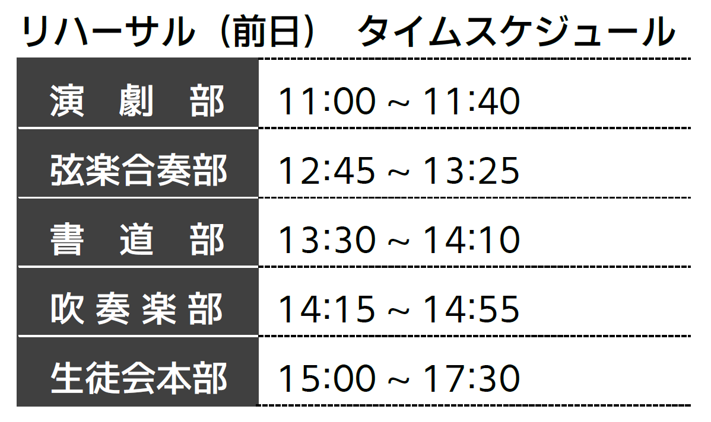

方 針
1. 基本方針
- 部活動、ホームルーム等の平素の研究および活動の成果を校内外に公開し、「地域に開かれ、かつ根ざした学校」として地域との密着を図る。
- 真理を研究し、さまざまな活動を通して、創造の精神を養う。
- 協調、親和、思いやりの態度を養うとともに、自主性を育成し、学校生活を豊かなものとする。
2. 活動方針
- 文化部の展示、発表、公演を中心とした、内容、形式ともに格調高いはぐま祭をめざし、その実現に努める。
- テーマおよび基本方針に基づき、それぞれの部やクラスの特色を生かした活動に取り組み、来校された方に活動成果を知っていただく機会とする。
- すべての活動において常に各団体責任者の先生と相談し、その指導に従う。
3. 注意事項
- （優先順位）
はぐま祭の円滑な運営のため、委員会 > 文化部展 > クラス展 > 校内装飾 の順で優先順位を設ける。
注 意校内分掌および生徒会本部は委員会に含む。教室配置や備品配布、机やいすの移動はこの順番で行う。
- （参加形態）
部やクラスなど、団体単位での希望制での参加を基本とする。個人、有志団体、関係者以外の参加は生徒会本部に申請し許可を得たもののみ認める。なお、複数団体の混合団体についても、生徒会本部との協議により可否を審査する。
- （著作権）
はぐま祭に関するすべての制作物は、著作権を侵害してはならない。各団体責任者は、著作権について十分注意し、その責任のもと制作に取り組む。
- （その他）
- 要項や配布物には目を通し、規則を遵守する。規則に違反した場合は、減点等の処分を下す。修正を求められたときは指示に従う。
- 周囲への配慮を欠いた行動は、厳に慎む。
- ペナルティー制の開始までは、下校時刻 18:00 を遵守する。下校時刻の詳細は、「ペナルティー制」を参照のこと。
- 登下校時の制服は、休日を含め制服とする。
- 貴重品の管理は、各自や各団体の責任のもと徹底する。ロッカーは必ず施錠する。
- 廊下や階段で立ち止まる、座り込む等の行為により通行を妨害してはならない。宣伝活動も同様である。特に、公演会場付近においては十分配慮する。
- 販促物の配布、展示場所以外でのポスターないし案内板等の掲示は、これを禁止する。ただし、PR ポスターはこの限りではない。PR ポスターは生徒会本部が管轄し、掲示する。
- 諸連絡は、プリントを配布して伝達する。集配ボックスを必ず確認する。各クラスの文化祭実行委員は、プリントの内容の周知をする。
- すべての活動は、常に各団体責任者の先生の監督・指導のもと行う。
- 体育館集合時は、効率よく点呼するため、番号順に整列する。服装は、クラス T シャツとする。
- 生徒会本部からの召集において、当日その対象者がいない場合は、必ず代理を立てる。後日、その団体に個別に連絡することは行わない。
- 準備を含め、はぐま祭の円滑な運営のため、決定事項などは生徒課および生徒会本部に一任する。
運営組織図・係分担表
タイムテーブル
制 作
1. 指 針
- テーマに基づいた展示を行う。
- 常に責任者と協議し、その指導にしたがって良識ある活動を行う。
- 参加を希望する団体は、各種申込用紙を提出する。内容に不備のある場合は、責任者を通じ差し戻す。
2. 制作内容の注意点
- 食品の取り扱いについては、別紙を参照のこと。
- 大きな音を出すなど、周囲を妨害しかねない行為は禁止する。
- 展示において、既製品のゲーム機を使用してはならない。
- 参加申し込みにおいて許可された場所以外で活動してはならない。机・いすの移動までは、部展は各部室、クラス展は各クラスで活動する。
- 所属団体外の者に、参加を強要してはならない。
- 展示会場については別紙を参照のこと。
はぐま祭の内容に関しては、生徒会本部、生徒課、課長主任会、職員会議で審議し、最終決定は校長が行う。
3. クラス展の展示場範囲
- 28 HR を除く 2 年のクラス展は、教室の半分を使用する。教室は、廊下側と窓側で分割する。
- 28 HR および 3 年のクラス展は、1 教室すべてを使用する。
4. 展示場制作の注意点
- 熱中症対策のため、各展示場では常時喚起する。換気方法は次のとおりである。

- 廊下は展示場として使用したり、ゲートや装飾などを除く一切のものを置いたりしてはならない。ゲートや装飾などを設置する場合は、廊下を 190 cm 以上開ける。
- 蛍光灯を取り外したり、付近に物を設置したりしてはならない。
- エアコンは、展示物で覆ってはならない。
- 天井、壁、廊下、窓やサッシなどへの釘、ガムテープ、ビニールテープ、画びょうなどの使用は禁止する。また、以下の行為をしてはならない。
- 塗料・ワックスがはがれたり、跡が残ったりする部分へのテープ類の使用。
- 黒板へのテープ類の使用。
- スプレー、ペンキ類の使用は、下記の通りにする。なお、使用はすべて屋外で行い、使用にあたっては、活動場所をすべて責任者に伝える。
- 使用時はブルーシートで床を覆い、その上に新聞紙、段ボールなどを敷く。
- スプレーは風で拡散することのないよう注意する。
- 絵の具の付着のあるものは、校舎の水道で洗ってはならない。はぐま会館となりの水道または武道場 1 階の水道を使用する。
- 火気は、その一切を禁止する。
- 工具およびカッターなどの取り扱いにあたっては、けがのないよう注意する。校舎を破損することのないよう、板を下に敷く。
参 考天井のボード 1 枚を張り替える場合、約 10 万円かかる。
- 準備に際し使用するものの一切は、各団体で用意する。学校の備品は、特別に許可を得た場合を除き、使用してはならない。なお、生徒会本部および事務室は、用具の貸し出しを行わない。
- 個人の所有物には、それぞれ氏名を記入する。
- 特別教室などの備品を使用する場合は、管理者に問い合わせ、その指示に従う。
- 大量の電力を消費する器具を使用してはならない。
- 定時制と教室を共用する教室では、定時制の掲示物を外してはならない。
- 職員室および準備室付近などで作業してはならない。図の黒塗りの部分で作業してはならない。
- 準備室前での作業は、担当教員の許可を得たうえで、業務を妨害しないようにする。
- 他団体の教室前では、教室の使用の有無を問わず作業しない。ただし、責任者同士の協議により合意を得た場合はこの限りではない。
- はぐま祭前日の午後、生徒課教員による展示会場の見回りを実施する。違反ないし危険な部分があった場合、責任者に通達する。当該箇所は開会式までに修正する。
- 展示会場のごみ箱は原則撤去し、使用団体ごとに保管する。団体の判断によりごみ箱を設置する場合は、各団体がごみ処理の責任を負う。
- 窓を暗幕ないし段ボールで覆う場合は、以下の点に注意する。
- 窓の開閉の妨げにならないように覆う。
- 破損および転落の危険があるため、窓を開けたまま覆わない。
- 覆った場所に来客が寄りかかることのないよう、掲示ないし説明にて注意を徹底する。
- 窓の付近に、高さのあるアトラクションを設置してはならない。机は、窓の付近で使用してはならない。
- 教室の扉および窓を取り外すことはできない。
- エアコンは、熱中症対策等の観点から、適切に使用する。
5. 机・いす・教卓
- （使用制限）
数量に限りがあるため、使用制限を設定する場合がある。使用に際する優先順位は、「方針 3. 注意事項 (1)（p. 1）」を参照のこと。
机・いす・教卓以外のものについては、「制作 4. 展示場制作の注意点 (11)（p. 8）」を参照のこと。
数量は文化祭実行委員が集計する。なお、教卓は 27 台である。
- （使用数）
第二次申し込み用紙に記入する。申し込み後は原則変更を受け付けない。
- （移動先および移動時間の決定）
担当教員が「机・いす・教卓の移動表」を作成し決定する。
注 意第二次申し込み用紙の提出内容を参照する。表の作成にあたり時間を要するため、第二次申し込み用紙の提出後は希望数の変更を一切認めない。
6. パネル・暗幕
- （使用制限）
パネル・暗幕の数量には限りがあるため、以下の通り制限を設ける。
- パネル：各団体 3 枚以内（2 年クラス展への配布後余りがある場合に限る）
- 暗 幕：各団体合計 45 平方メートル以内
注 意教室を分割する場合の仕切りはこれに含めない。部展については、パネルに余りがある場合、追加の配布を行う場合もある。
- （使用数）
第二次申し込み用紙に記入する。申し込み後は原則変更を受け付けない。
- （在 庫）
パネル・暗幕の在庫数はそれぞれ次の通りである。
- パネル：138 枚
注 意生徒会本部の備品のサイズは、（縦） × （横） = 90 cm × 180 cm。
- 暗 幕：次の表の通り。ただし、性質上ある程度の誤差を含む。 
- パネル：138 枚
- （配 布）
配布の割り振りは、実行委員会が調べる在庫数に基づいて生徒会本部が行う。配布時に不足ないし破損等があった場合は、各団体と実行委員会が協議し対応する。
パネルの担当は体育委員会、暗幕の担当は交通安全委員会。
7. 会 計
- （経費の上限）
展示経費の上限を以下の通りに定める。
- 部展・委員会：上限なし
- 1 年校内装飾：30,000 円
- 2 年クラス展：60,000 円
- 3 年クラス展：90,000 円
- （会計報告）
各会計担当者は、生徒会本部が配布する会計報告書を提出する。物品の購入にあたっては、領収書の交付を受ける。レシートは認められない。
- （その他）
- 経費は、すべて各団体が徴収し用意する。
- 金銭の取り扱いについては各団体が責任を負う。
- 経費の徴収にあたっては、妥当性、所属生徒の同意、責任者の承認が必要である。各団体の責任で対応する。
- 出費は最低限におさえ、集金の過不足は避ける。
8. 申し込み
- （第一次申し込み）
- 第一次申し込みの内容に基づき、パンフレットの制作を印刷会社に委託する。
- 空欄および未選択の部分は、希望がないものとみなす。
- 提出期限を厳守する。
- 内容に不備のあるときは差し戻す。
- （第二次申し込み）
- 第一次申し込みが承認され次第、第一次申し込み用紙の返却と同時に配布する。
- 机・いす・教卓の使用希望数の変更は一切受け付けない。
- 提出期限を厳守する。
- 内容に不備のあるときは差し戻す。
壁・ゲートの作り方
1. 壁を使用する
- 机を 2 段または 3 段積んで、結束バンドやビニールひもで固定する。
- 段ボールで作った壁や暗幕などを机の柱に固定する。ビニールひもに加えガムテープで補強する。

2. 段ボールを使用する
- 同じサイズの段ボールを積み、ガムテープや結束バンドで固定する。
- 一番下の段ボールの中に、ペットボトルなど重いものを入れて固定する。養生テープなどテープ類は禁止。 
服装・異装
PR 動画
PR ポスター
全体公演
体育館公演
1. 体育館リハーサル
- 体育館で公演を行う団体および式典を行う生徒会本部のため、リハーサルを行う。
注 意全体公演以外のリハーサルは各団体で時間を調整する。

2. 体育館ステージ
- 仮設ステージは、机を縦 7 台 × 横 17 台配置する。下記のレイアウトにしたがってステージでの発表を行う。